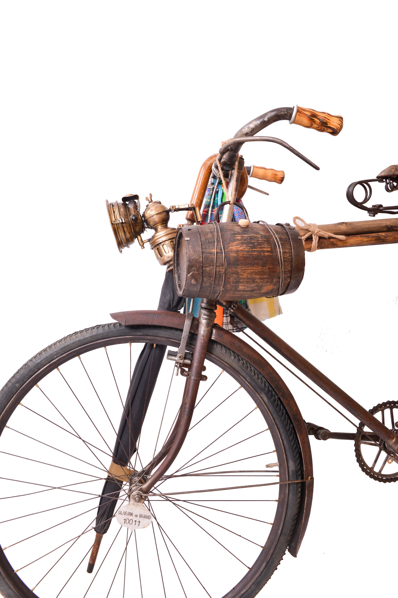
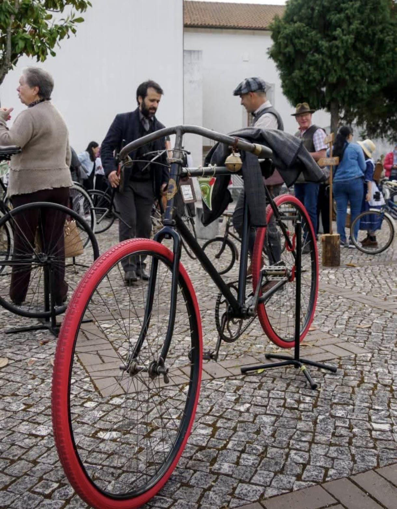
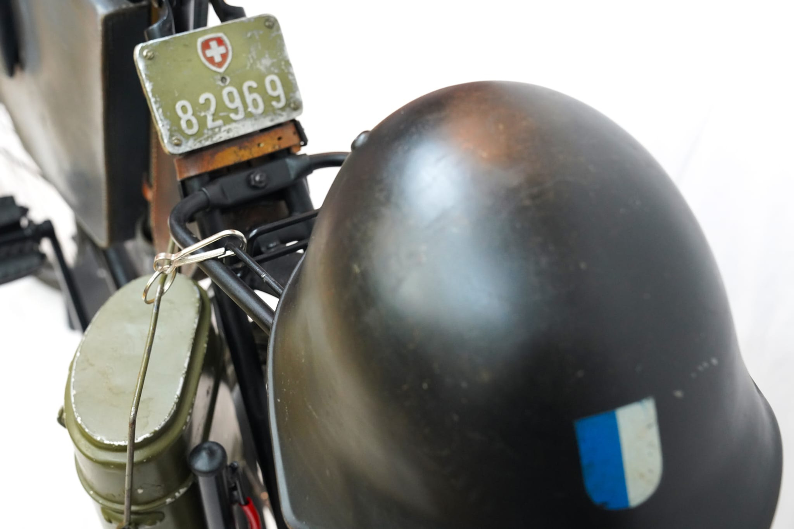
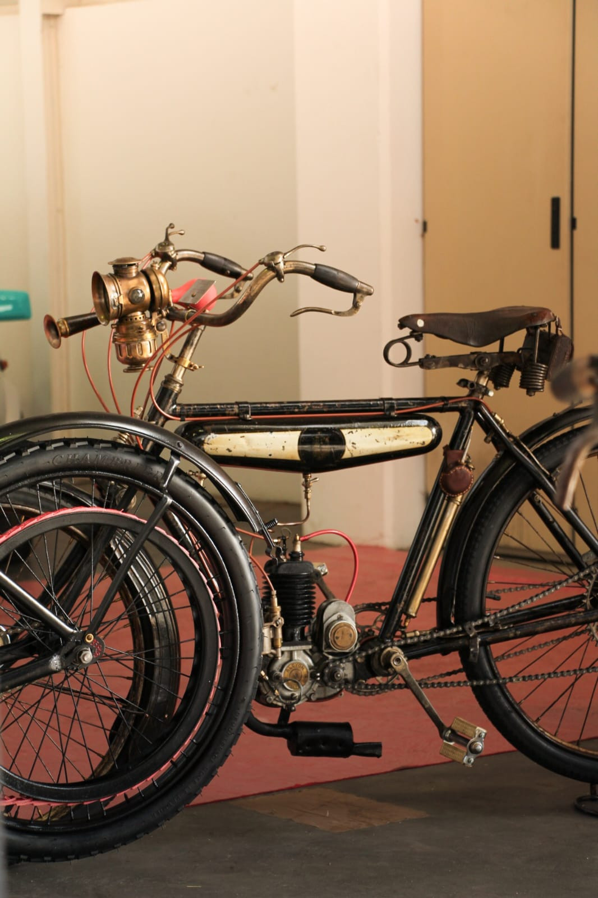
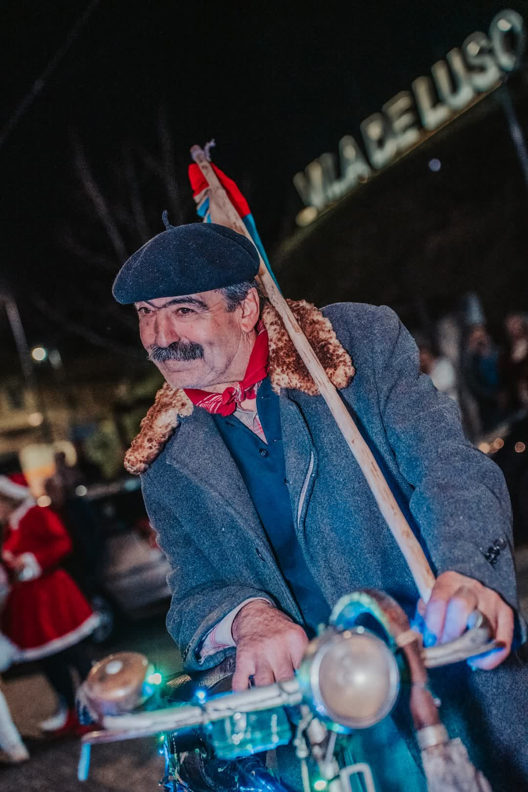

PORTFÓLIO
PORTFÓLIO
Bem-vindo ao nosso portfólio. Aqui encontra uma seleção mais completa dos trabalhos, cada um com imagens-base e ligação para a respetiva página individual.

PORTFÓLIO
Bem-vindo ao nosso portfólio. Aqui encontra uma seleção mais completa dos trabalhos, cada um com imagens-base e ligação para a respetiva página individual.
Evento e recriação histórica
Desfile Histórico de Bicicletas Antigas da Bairrada é um evento único em Portugal, realizado na Vila de Mamarrosa, concelho de Oliveira do Bairro. Nasceu em 2015 com o princípio da defesa e valorização da bicicleta antiga, reunindo colecionadores e amantes da bicicleta com trajes de época e exemplares até à década de 40.

Exposição histórica
É uma exposição que nos faz recuar no tempo da Segunda Guerra Mundial, onde percebemos a importância da bicicleta como meio de transporte. A exposição é composta por 10 exemplares da mítica marca Condor, marca que equipou várias unidades em todo o mundo e pertencem ao colecionador Vítor Ferreira.

Exposição sobre evolução tecnológica
É uma exposição que nos leva à introdução do motor em velocípedes, numa fase em que o barulho dos cascos dos cavalos nas ruas começou a ser substituído pelo roncar dos motores. A mostra aborda a transição entre a bicicleta tradicional e as primeiras soluções motorizadas de mobilidade individual.

Representação e trajes de época
É uma representação onde, através de trajes de época juntamente com a bicicleta, revivemos as memórias do passado. A figuração ajuda a dar vida às exposições, desfiles e recriações históricas, criando ambientes mais imersivos e emocionais.

Projeto audiovisual
É um documentário com a duração de 1h10m que retrata a ligação entre o homem, a mulher e a bicicleta antiga. Através do testemunho de pessoas entre os 65 e os 92 anos, revela o quanto a bicicleta foi importante no trabalho, no lazer, no desporto e no quotidiano, e resulta de pesquisa e recolha do colecionador Vítor Ferreira em fevereiro de 2022.

Exposição temática
Bicicletas com Histórias “Profissões de Antigamente” é uma exposição que nos faz recuar no tempo através de exemplares de profissões antigas que utilizaram bicicletas. A mostra conta com 23 exemplares dos colecionadores Vítor Ferreira e Nelson Ferreira, manequins com indumentárias e acessórios ligados às respetivas profissões, e procura manter vivas as tradições, cultura e património.